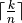
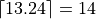
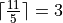

Pigeonhole Principle¶
If there are 5 pigeons living in 4 pigeonholes, then at least one pigeonhole has more than one pigeon living in it. Thus, if there are more pigeons than the number of pigeonholes, then at least one pigeonhole will have more than one pigeon. This is a simple form of the pigeonhole principle.
Now, consider the following case. We arbitrarily distribute 11 balls in 5 boxes (some boxes could end up empty). We then ask the question “what is the maximum count of balls in a single box?”. Well, it depends on how the balls got distributed. The largest answer to the question is 11. This corresponds to the case that all balls went in a single box. What is the smallest answer?
The smallest answer will be achieved when we balance out the counts in all the boxes to the extent possible. Thus, we will first put 2 balls in each box. This accounts for 10 balls. The final ball will then have to go in one of the 5 boxes. This box will have a ball count of 3. Thus, the smallest answer to our question is 3. One cannot achieve a smaller answer. For example, 2 cannot be an answer. If we max out all the boxes by placing 2 balls in each both, we can only account for 10 balls. Thus, a box will have to accomodate a third ball. Moreover, we have already shown that in this case a valid configuration exists.
This same answer is valid if we have 12, 13, 14, or 15 balls, instead of 11. However, as soon as we have 16 balls, one of the boxes has to have at least 4 balls. The answer of “4” is valid for 16, 17, 18, 19, and 20 balls. As soon as we have 21 balls, the answer becomes “5”.
Thus, if we have k balls and n boxes, the answer is .
We had encountered the floor function while discussing divisors in number theory. The function here is the ceiling function. It is the smallest integer that is larger than or equal to this number. For example,

In the problem of 11 balls and 5 boxes above, the answer is .
In pigeonhole problems, identifying the boxes/buckets is usually the tricky part.
Let us look at some examples.
A drawer has a mixture of limitless red, blue, and black socks. While drawing socks from the drawer in the dark, what is minimum number of socks that need to be drawn to guarantee that two socks of the same color get drawn?
Every sock drawn falls in one of three buckets - red, blue, and black. Hence, in accordance with the pigeonhole principle, the minumum number of socks needed is 4. This will gurantee that there will be at least one bucket with at least 2 socks.
A group of people meet at a party. Each person shakes hand with an arbitrary number of people in the party. It can be shown that there will be at least two people who would hsve shaken hands with the same number of people (not necessarily the same people).
This works for any number of people. For ease of understanding, let us assume that there are 4 people.
Let the number of persons a person shook hands with form the buckets. So there are 4 buckets - shook hands with 0, shook hands with 1, shook hands with 2, shook hands with 3.
Note that one of the two buckets “shook hands with 0” and “shook hands with 3” have to be empty. If a person falls in “shook hands with 3”, then he/she would have shaken hands with all other people. So there cannot be any person who has not shaken hands. Hence, there are only 3 buckets that are populated by the 4 people. By the pigeonhole principle, there will be at least one bucket with more than one person.
A person selects a certain number of integers randomly. What is the minimum number of integers that the person needs to select to guarantee that the there are at least two integers in the selection whose difference is divisible by 7?
Each integer is one of 0, 1, 2, 3, 4, 5, and 6 modulo 7. Let the buckets be the residues modulo 7. The bucket that an integer will fall into is the modulo 7 of that number. For the difference to be divisible by 7, the two numbers should be congruent modulo 7 i.e. they should be in the same residue bucket. Hence, by the pigeonhole principle, the answer is 8 (as there are 7 buckets).
A person selects a certain number of integers randomly as in the preceding example. What is the minimum number of integers that the person needs to select to guarantee that there are at least two integers in the selection whose difference or sum is divisible by 10?
We form the following buckets where the set elements are residues modulo 10: {0}, {1,9}, {2,8}, {3,7}, {4,6}, {5}. If two numbers fall in the same bucket, either their difference or their sum will be divisible by 10. For example, consider the bucket {1,9}. If there are two numbers in this bucket, the numbers are either both 1 mod 10, or both 9 mod 10, or one 1 mod 10 and the other 9 mod 10. In the first two cases, their difference will be 0 mod 10. In the last case, their sum will be 0 mod 10. For the buckets {0} and {5}, the difference of any two numbers in a bucket will be 0 mod 10.
Thus, we have 6 buckets and we need 7 integers to guarantee that at least two will fall in the same bucket.